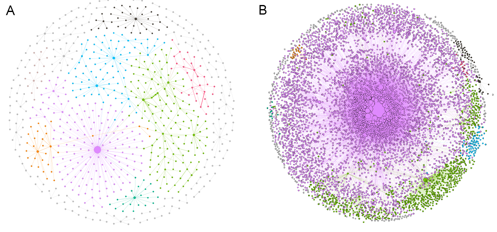

We as a society have accepted the internet as an extension of the self. The online disinhibition effect sometimes allows us to open up to strangers in order to seek support, or disclose proxies for medical conditions while being social on the networking platforms. These signals — albeit subtle — could be used to develop tools to understand population health, and in some cases, develop interventions.
In these works, I explored different data sources, methods, and models to capture these signals using methods from complex networks and NLP.